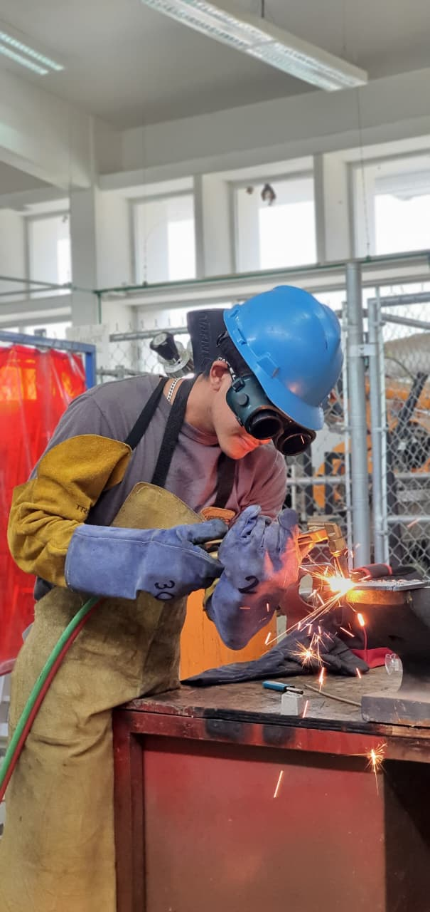
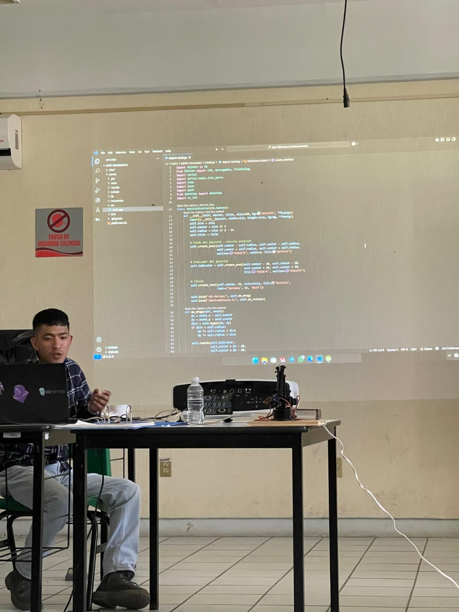
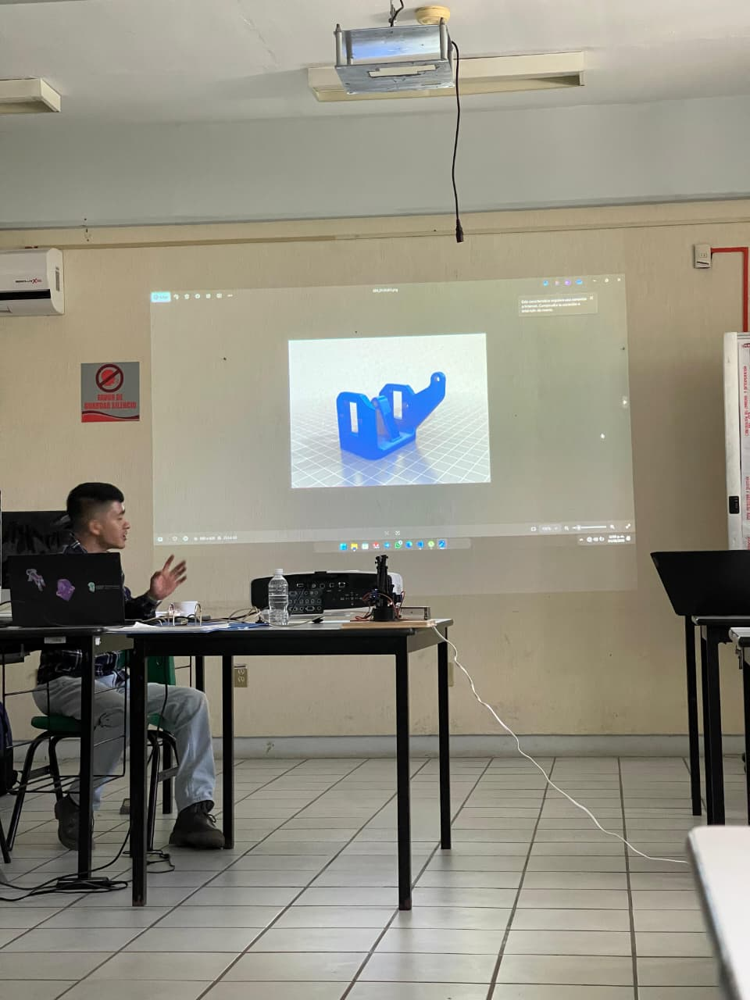
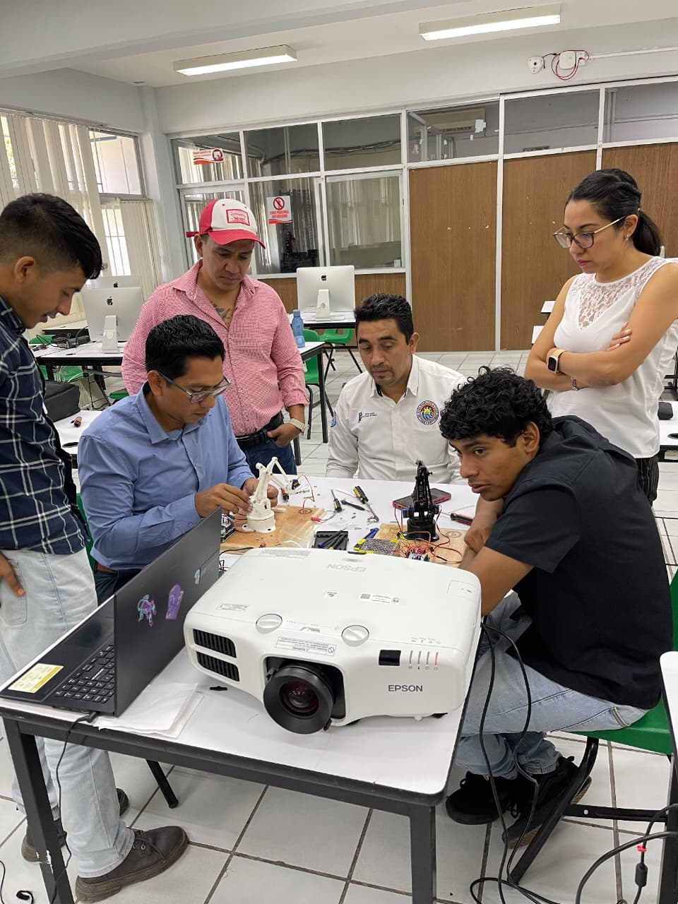
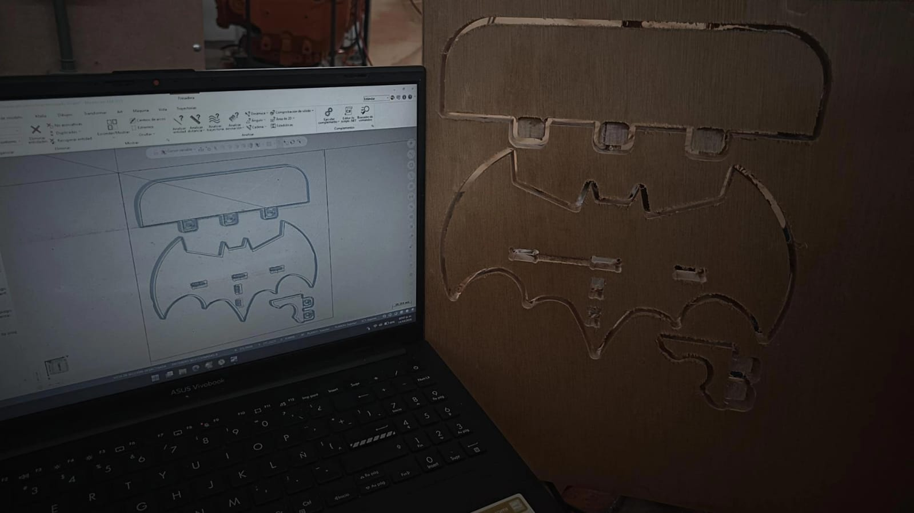
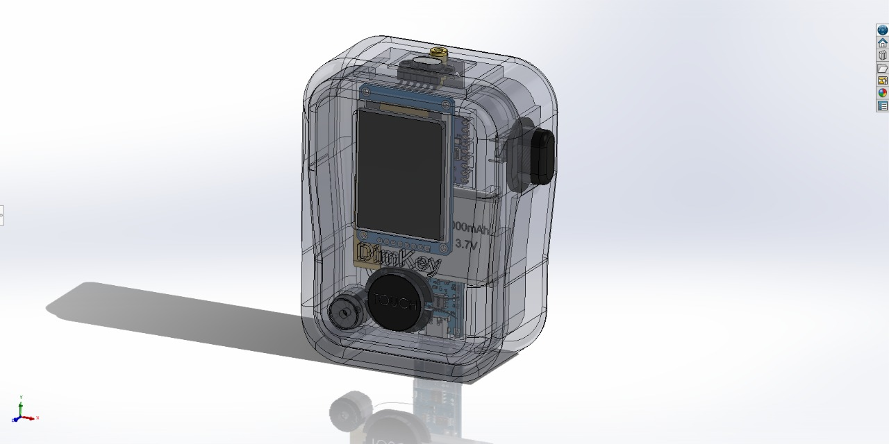
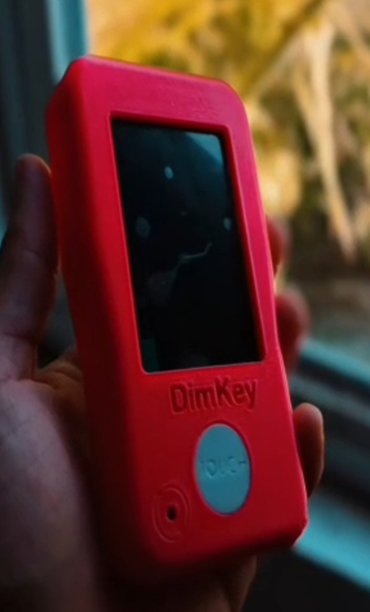
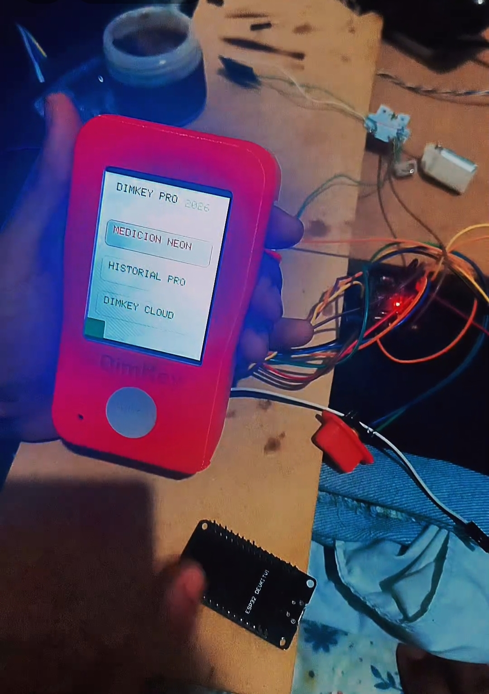
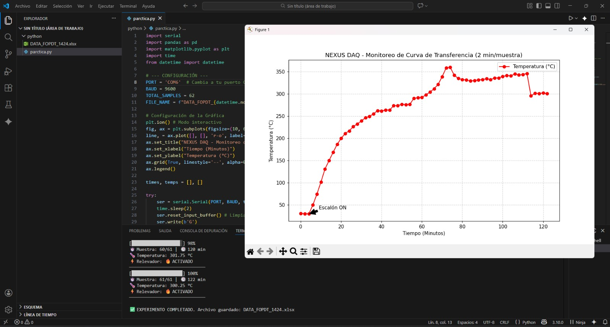

Programa intensivo de 5 días: diseño 3D, impresión FDM/Resina, programación de brazos robóticos y seguridad industrial.

Programación de brazo robótico

Taller impresión 3D

Supervisión y seguridad
Fotografías reales de la capacitación (evidencia de instructor).
Simulación avanzada: Acoplamiento Térmico-Estructural y CFD prospectivo — Proyecto orientado a optimización de sistemas HVAC y refrigeración.
Instrumentación: manómetros de alta/baja, bombas de vacío, vacuómetros — aplicados a sistemas de refrigeración reales.
Estrategias de maquinado y simulación G-code. Vista previa para carga rápida.

Diseño mecánico de precisión + integración ESP32-C3 y sensores láser. Manufactura aditiva optimizada.

Plano de ensamble SolidWorks

Prototipo impresión 3D

Sensores láser + ESP32
Modelado paramétrico, análisis de tolerancias y fabricación digital.

Desarrollo de scripts para monitoreo de variables termodinámicas y control de sistemas de refrigeración.
Especialista en la formación de cuadros técnicos mediante el aprendizaje basado en proyectos. Mi enfoque combina la teoría termodinámica profunda con la práctica intensiva en taller, asegurando que el personal domine no solo el 'cómo', sino el 'porqué' de cada proceso de climatización y manufactura.